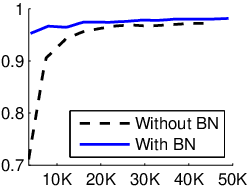
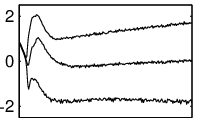
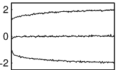
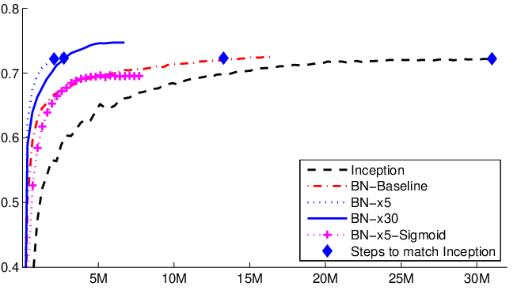

Batch Normalization：算法、反向传播与机制解释边界
原论文：Batch Normalization: Accelerating Deep Network Training by Reducing Internal Covariate Shift。
本文在原论文论证链基础上补充必要数学推导、工程直觉与现代实现对照。
模型定位与谱系
1. BatchNorm 不是优化器，而是进入前向函数的一层运算
Adam/AdamW 是：
已经得到梯度以后，怎样更新参数？
Batch Normalization 是：
在网络前向传播中，怎样重新参数化一层中间激活？
这两个层级必须分开。
对一个标量特征 \(x\)，BN 在训练时通过 minibatch 统计量构造
再用可训练仿射参数恢复表示自由度：
所以 BN 会同时改变：
forward 的数值；
backward 的 Jacobian；
同一 minibatch 样本之间的依赖；
train / inference 的计算语义。
它不是一个在 optimizer.step() 中才出现的技巧。
2. 原论文的问题链条
2015 年作者面对的训练直觉可以沿这条链读：
深层网络逐层训练
↓
前面层的参数不断变化
↓
后面层所接收的输入分布也不断变化
↓
后面层不断追逐“移动的输入统计”
↓
作者称之为 Internal Covariate Shift
↓
朴素方案：把中间激活做标准化 / 白化
↓
但全协方差白化昂贵，且若脱离计算图还会被网络抵消
↓
Batch Normalization
├── 每个特征独立标准化
├── 用 minibatch 估计统计量
├── 统计计算保留在计算图里
└── 用 gamma / beta 恢复可学习尺度与中心
主要类型：A 原始方法论文。 它提出一种可嵌入多类网络的标准化层，而不是一份固定参数量模型报告。
3. 从全白化退到逐特征归一化，不是“少做一点”这么简单
完整白化对随机向量 \(x\in\mathbb R^D\) 可写成
其中
它需要估计所有特征之间的协方差，再求矩阵逆平方根。若 \(D\) 很大而 minibatch 很小：
协方差估计噪声大；
矩阵可能奇异或病态；
前向要做矩阵分解/变换；
反向还要穿过这套矩阵运算。
BN 的关键简化是：不试图消掉不同 feature 之间的协方差，只控制每个 feature 自己的一阶和二阶标量统计。
这牺牲了完整白化，但得到可扩展、可微、容易插入深层网络的模块。
4. 技术树定位
神经网络训练
├── 参数更新
│ └── SGD / Adam / AdamW
│
└── 网络内部数值变换
└── Normalization
├── BatchNorm：统计跨 batch（卷积时还跨空间）
├── LayerNorm：统计单样本内部特征
├── GroupNorm：统计通道组
└── RMSNorm：不减均值，仅按 RMS 缩放
BN 与 LayerNorm/RMSNorm 不能只说成“公式差不多”。最关键的分歧首先是统计轴和样本间耦合。
输入、输出与任务
1. 全连接场景：对哪个轴统计？
设一层输出
对第 \(d\) 个特征，
共享同一组 batch mean / variance：
因此：
统计向量 \(\mu,\sigma^2\in\mathbb R^D\)；
可训练 \(\gamma,\beta\in\mathbb R^D\)；
输出仍是 \(Y\in\mathbb R^{B\times D}\)。
BN 不改变特征维度。
2. 卷积场景：为什么不是只对 \(B\) 个数求均值？
若卷积输出
原论文卷积 BN 对每个 feature map / channel 的所有位置共同统计。因此对固定通道 \(c\)，有效统计样本数是
均值：
方差：
然后
所以 \(\gamma,\beta\) 的 Shape 是
不是 \([B,C,H,W]\)。
3. 训练与推理不是同一个统计过程
内容 |
Training |
Inference |
|---|---|---|
均值/方差 |
当前 minibatch 统计 |
固定的总体估计 / running statistics |
样本是否相互影响 |
是 |
固定统计下通常否 |
\(\gamma,\beta\) |
参与前向并可学习 |
使用训练后的固定参数 |
是否需要 backward |
是 |
通常否 |
是否可直接与前一线性层融合 |
不能一般融合 |
固定统计后可以 |
训练时，同一批中的其他样本改变，会改变本样本的 \(\mu_{\mathcal B},\sigma_{\mathcal B}^2\)，所以输出也会改变。这种跨样本依赖是 BN 的结构性质，不是实现 bug。
4. 为什么 \(\gamma,\beta\) 必须存在？
如果永远强制
且不允许后续恢复尺度和中心，那么某些表示可能被不必要限制。
加入
后，网络可以学习：
放大/缩小归一化特征；
平移激活工作区间；
在合适统计条件下近似恢复归一化前的尺度。
因此 BN 的目标不是把所有层永远钉死在“均值 0、方差 1”的最终表示，而是提供一个更容易优化的参数化接口。
骨干架构与信息交互
1. 原论文 Algorithm 1 的真实数据流
对一个 minibatch
Algorithm 1 按以下顺序执行：
把它放进网络：
flowchart TD
U["上一层激活 U"] --> L["Linear / Conv"]
L --> X["中间激活 X"]
X --> MU["batch mean"]
X --> VAR["batch variance"]
MU --> N["normalize"]
VAR --> N
X --> N
N --> A["gamma * x_hat + beta"]
A --> PHI["nonlinearity"]
PHI --> NEXT["后续网络"]
原论文通常把 BN 放在线性/卷积变换之后、非线性之前。现代架构可能改变 normalization 的位置，但不能回写成本文原始配置。
2. Figure 1(a)：先看训练速度，不要把横轴误读成 epoch

原论文 Figure 1(a)，原始图形资产 mnist.eps / ar5iv 对应图片。纵轴是验证集 accuracy，横轴是 training steps。
作者先展示 BN 网络更快达到较高验证准确率。这个图支持：
在论文给定的深层 sigmoid 网络和训练配置中，BN 明显改善优化速度。
但它单独不能回答：
为什么会更快？
所以作者紧接着放 Figure 1(b)/(c)，转向内部激活统计。
3. Figure 1(b)：没有 BN，sigmoid 输入的分位数不断漂移

原论文 Figure 1(b)，源资产 evo.eps。曲线追踪一个选定激活在不同训练步的 15%、50%、85% 分位数。
这不是 loss curve，也不是梯度范数。
作者选择分位数而不是只画均值/方差，是为了让读者直观看到：
这个中间单元接收到的整个数值区间在训练中不断移动。
这与论文定义的 ICS 叙事形成视觉对应。
4. Figure 1(c)：有 BN，分位数更稳定

原论文 Figure 1(c)，源资产 evo-bn.eps。
把 (b) 与 (c) 放在一起，作者要建立的证据链是：
无 BN：
中间输入统计显著变化
↓
有 BN：
统计变化减小
↓
同时 Figure 1(a) 显示训练更快
↓
作者据此支持“减少 ICS 有助优化”的解释
这里最重要的批判性阅读是：
“两个现象同时发生”不等于已经隔离出唯一因果机制。
后续研究正是从这里继续追问。
5. Figure 2：BN-Baseline 与 BN-x5 不是同一种消融

原论文 Figure 2，源资产 inception-compare.eps。
这张图经常被二手资料简化成：
“BN 让训练快 14 倍。”
这会混淆两层实验。
原论文表格中：
Inception：达到 72.2% validation accuracy 约需 \(31.0\times10^6\) steps；
BN-Baseline：只把 BN 加入同类基础设置，约需 \(13.3\times10^6\) steps；
BN-x5：不仅有 BN，还进一步提高 learning rate、调整 regularization / schedule 等，约需 \(2.1\times10^6\) steps。
所以约 14 倍对应的是
它是BN + 更激进训练 recipe 的整体结果。
如果想讨论“仅插 BN”的独立效果，更合理对照是 Inception vs BN-Baseline，而不是直接拿 BN-x5。
关键技术
1. 为什么不能把 normalization 当成训练前一次性 preprocessing？
对原始输入图片做标准化，统计量固定，当然可以在训练前完成。
但隐藏层输入
本身会随 \(W\) 训练而变化。
若你在某一步估计出一个 normalization 变换，却把它当作计算图外的固定数据处理，下一步 \(W\) 完全可能学出新的尺度/偏置把这套变换抵消。
原论文 §2 的重要观点是：
normalization 本身必须成为可微模型的一部分，让梯度知道均值/方差也依赖当前 activations。
这就是为什么 BN 的 backward 不能只写成
因为 \(\mu\) 和 \(\sigma^2\) 也依赖所有 \(x_j\)。
2. 从全白化到标量 BN 的两步简化
原论文 §3 明确做两次近似。
简化 1：不做完整 covariance whitening
对每个标量 feature 单独归一化：
这样不处理不同 feature 之间的 covariance，但复杂度从矩阵操作降为逐特征归约。
简化 2：不用完整数据集统计，改用 minibatch
如果每一步都要遍历全训练集计算 \(\mu,\sigma^2\)，就无法进行高效 SGD。
于是用 minibatch 估计：
这让算法可训练，但引入了随机性和 batch coupling。
BN 的设计不是“完美标准化”，而是在可训练性、计算成本和统计精度之间做工程折中。
3. 为什么 \(\epsilon\) 不只是“防止除零”？
归一化分母：
当 \(v\gg\epsilon\)，\(\epsilon\) 影响很小。
当 \(v\) 极小时：
此时 \(\epsilon\) 会限制归一化增益，不让
无限增大。
所以它既是数值稳定项，也会在低方差通道中改变实际缩放。
4. 从链式法则完整推导 BN 的输入梯度
对单个 feature 的 \(m\) 个值，定义
令上游梯度
先过最后仿射：
记
同时
对方差求导
因为
所以
于是
对均值求导
\(q_i=x_i-\mu\)，因此直接项给出
还要考虑 \(v\) 对 \(\mu\) 的依赖：
求导：
而根据均值定义：
所以
因此
对某个 \(x_j\) 求导
首先
其次可得
于是
代入前面两式，并利用
得到
这三个部分分别表示：
本样本直接传回的梯度；
由于共享 batch mean 带来的全批次修正；
由于共享 batch variance 带来的尺度方向修正。
所以 BN 的 backward 天生是跨样本耦合的。
5. 一个可以手算的前向例子
取单 feature 的 minibatch：
忽略 \(\epsilon\)。
均值：
方差：
标准差：
因此
若
则
这说明 BN 不是“标准化后就结束”。可学习 \(\gamma,\beta\) 会立即把标准化坐标重新映射到任务需要的工作区间。
6. 为什么极小 effective batch 可能退化？
如果单 feature 只有两个有效值，忽略 \(\epsilon\)，归一化结果常被强约束到近似
的模式。
这意味着输入幅度的连续变化在归一化后可能被强烈压缩。
卷积 BN 的有效样本数通常是
所以即使 batch size \(B\) 不大，早期大空间 feature map 仍可能有较多统计点；而在其他结构或很小空间尺寸下，统计噪声会更显著。
因此“batch size 越小 BN 一定怎样”不能只看 \(B\)，还要看真实归约轴和有效样本数。
7. 最小 PyTorch：手写 BN2d 并核对公式语义
import torch
import torch.nn.functional as F
torch.manual_seed(11)
dtype = torch.float64
X = torch.randn(
4, 3, 2, 2,
dtype=dtype,
requires_grad=True,
) # [B,C,H,W]
gamma = torch.randn(3, dtype=dtype, requires_grad=True)
beta = torch.randn(3, dtype=dtype, requires_grad=True)
upstream = torch.randn_like(X)
eps = 1e-5
axes = (0, 2, 3) # 对每个 C，沿 B,H,W 统计
mu = X.mean(dim=axes, keepdim=True)
var = ((X - mu) ** 2).mean(dim=axes, keepdim=True)
scale = torch.sqrt(var + eps)
x_hat = (X - mu) / scale
Y = (
gamma[None, :, None, None] * x_hat
+ beta[None, :, None, None]
)
Y_ref = F.batch_norm(
X,
running_mean=None,
running_var=None,
weight=gamma,
bias=beta,
training=True,
eps=eps,
)
torch.testing.assert_close(Y, Y_ref)
dx_manual = (
gamma[None, :, None, None] / scale
) * (
upstream
- upstream.mean(dim=axes, keepdim=True)
- x_hat * (upstream * x_hat).mean(dim=axes, keepdim=True)
)
dgamma_manual = (upstream * x_hat).sum(dim=axes)
dbeta_manual = upstream.sum(dim=axes)
(Y * upstream).sum().backward()
torch.testing.assert_close(X.grad, dx_manual)
torch.testing.assert_close(gamma.grad, dgamma_manual)
torch.testing.assert_close(beta.grad, dbeta_manual)
Shape 对应：
X：\([B,C,H,W]=[4,3,2,2]\)；mu,var：\([1,C,1,1]\)；gamma,beta：\([C]\)；x_hat,Y：仍为 \([B,C,H,W]\)。
当前 MCP 默认 Python 没有安装 PyTorch，因此这段代码完成了公式、Shape 与 API 语义审查，但不能声称在当前环境运行通过。
8. 原论文 ImageNet 实验：必须拆开哪些变量同时改变了
设置 |
关键变化 |
达到 72.2% validation accuracy 所需 steps |
最大 validation accuracy |
解读 |
|---|---|---|---|---|
Inception |
原基础训练 |
\(31.0\times10^6\) |
72.2% |
baseline |
BN-Baseline |
主要加入 BN |
\(13.3\times10^6\) |
72.7% |
更接近“BN 本身”的消融 |
BN-x5 |
BN + 更大学习率 + recipe 调整 |
\(2.1\times10^6\) |
73.0% |
组合效果 |
BN-x30 |
更激进训练 |
\(2.7\times10^6\) |
74.8% |
又一不同 recipe |
BN-x5-Sigmoid |
BN 配 sigmoid |
— |
69.8% |
说明 BN 能让饱和非线性更可训练，但结果仍弱于最佳 ReLU 设置 |
所以“14×”的严谨表述是：
BN 使作者能够采用更激进的训练设置，完整 BN-x5 recipe 在达到指定 accuracy 阈值时使用了约十四分之一的 steps。
不能缩写成：
“只插一个 BN 层，就严格让任何模型训练快 14 倍。”
预训练与后训练
本文没有现代意义上的 LLM pretraining / SFT / RLHF 流水线。
原论文实验主要是：
MNIST 有监督分类；
ImageNet 有监督分类；
深层 sigmoid / Inception 系列网络训练。
损失仍然来自任务本身，例如分类交叉熵。BN 只是进入
的网络映射内部。
\(\gamma,\beta\) 与 running statistics 是两类完全不同的状态
\(\gamma,\beta\)：
是可训练参数；
接收梯度；
由 optimizer 更新。
running mean / variance：
是统计缓冲；
通常按训练 batch 更新；
不依赖
requires_grad=True才会变化。
这在 fine-tuning 中极容易踩坑。
即使你把 BN 的所有参数都设成
requires_grad = False
只要模块仍处于
train()
模式，running statistics 仍可能继续变化。
所以“冻结 BN 参数”和“冻结 BN 行为”不是同一个操作。
为什么大语言模型后来更常用 LayerNorm / RMSNorm？
不能简单说“BN 不适合 Transformer，所以失效”。
更精确的结构差异是：
BN 跨样本统计；
自回归推理常是 batch 动态、序列长度变化、单请求增量 decode；
让一个 token 的归一化依赖同 batch 其他样本，会让训练/服务语义复杂；
LayerNorm / RMSNorm 在单样本内部按 hidden features 统计，不要求跨请求同步。
所以这是统计轴与服务语义匹配的问题，而不是某种归一化绝对更“先进”。
推理与部署
1. 推理时为什么 Conv + BN 可以融合？
推理统计固定后：
定义
则
若
代入：
所以可以定义融合后的
和
对于 Conv2d，\(a_c\) 分别乘对应 output channel 的卷积核。
如果原 Conv 没 bias，就令
2. 为什么训练时不能提前这样融合？
因为训练时
会随当前 batch 改变。
而且 backward 需要知道：
当前 \(x_i\) 还影响了共享 mean / variance。
所以训练 BN 不是固定 affine transform，不能在训练开始前就永久折进 Conv。
3. FLOPs 不是全部成本
BN 的逐元素 FLOPs 相对大卷积通常不高，但它包含：
统计归约；
激活读写；
backward 的额外 reduction；
SyncBatchNorm 中跨设备统计同步。
在多 GPU 训练中，若要得到全局 batch 的通道统计，就需要通信；这与 AdamW 的 optimizer-state 通信又是不同层级。
推理端若成功 fuse：
独立 BN kernel 可消失；
中间激活的额外写回可能减少；
最终 wall-clock 改善仍取决于编译器、kernel fusion 和硬件。
Prefill / Decode / KV Cache 与原论文 BN 无直接对应关系。
技术 → 模型
Batch Normalization → 本文：
PROPOSESBatchNorm → BN-Inception：
IMPLEMENTSBatchNorm → ResNet v1：
ADOPTSBatchNorm → LayerNorm / GroupNorm / RMSNorm 研究脉络：后者属于
DERIVED_FROM / EXTENDS更广归一化问题，但统计规则并不相同Internal Covariate Shift explanation → 2015 BN paper：作者
PROPOSES的机制解释；后续工作对其充分性提出修正
模型 → 技术
BN-Inception：
DERIVED_FROMInception；ADOPTSBN；进一步 recipe 版本还IMPLEMENTS更大学习率和其他训练调整ResNet v1：
ADOPTSBN；核心PROPOSES是下一篇的 residual learning典型 Decoder-only Transformer：通常不
ADOPTSBatchNorm，而IMPLEMENTSLayerNorm/RMSNorm 等单样本归一化
论文细读
1. Abstract：先给“训练深网很难”，再立刻给一个机制名字
定位：PDF p.1，Abstract。
摘要的第一层结构是：
SGD 已经很成熟
↓
但训练深网络仍会被参数变化导致的层输入分布变化拖慢
↓
作者把这种现象命名为 internal covariate shift
↓
提出 Batch Normalization
这里“命名”很重要。
一旦作者给现象一个术语 internal covariate shift，后文所有设计都可以围绕：
怎样减少这个 shift？
展开。
这是一种非常典型的研究写法：先把模糊训练困难压缩成一个可讨论的中间机制。
但细读必须保留证据层次：术语定义不是因果证明。
2. Abstract 后半：为什么作者一次列出高 learning rate、少初始化敏感、regularization？
摘要没有只说“更快”。
作者还列：
可以使用更高 learning rate；
对初始化不那么敏感；
有一定 regularization effect；
甚至让 sigmoid 更容易训练；
ImageNet 上取得明显加速和准确率提升。
这些并不是五个互不相关的宣传点。
它们共同服务于一个更强的叙事：
BN 不只是把一次前向的数值范围压整齐，而是在改变整个 optimization geometry / training behavior。
不过 2015 论文会把这些结果主要挂到 ICS 上；后续机制研究说明，这种解释可能过于单一。
3. Introduction 第一个关键转折：为什么从“参数更新”谈到“数据分布变化”？
作者先描述 mini-batch SGD：
每个 batch 估计梯度；
参数更新后网络函数改变；
下一层接收到的输入也随之改变。
然后做类比：
机器学习模型一般希望输入分布相对稳定；但深网内部每层都在面对前层参数变化产生的非平稳输入。
这里的写作技巧是把“深层神经网络内部优化”重新叙述成一个读者熟悉的distribution shift 问题。
这就是 “covariate shift” 一词的来源。
需要注意：它是类比和机制假说，不是说隐藏层输入真的满足经典 covariate-shift 文献中的所有统计假设。
4. 为什么 Introduction 特别拿 sigmoid 饱和做例子？
sigmoid：
当 \(|z|\) 很大时，
很小。
所以若前一层参数不断把 \(z\) 的分布推向饱和区，当前层会不断改变自己的有效工作区间。
作者用 sigmoid 不是偶然的：它给 ICS 叙事提供一个可感知的局部机制。
接下来引出 normalization 就顺理成章：
如果我们控制进入非线性的数值尺度，是否能减少这种追逐？
这也是 Figure 1(b)/(c) 为什么观察 sigmoid 输入分位数。
5. §2：为什么作者先批评“训练后再 normalize 一下”的朴素方案？
这部分很容易被跳过，但它决定了 BN 为什么必须进入计算图。
假设某一层有参数
如果你在优化器外部根据当前参数计算一个 normalization，然后把 normalize 后的结果当成固定输入，下一次 \(W,b\) 更新完全可能重新改变尺度，让 normalization 很快失效。
作者进一步指出，如果 normalization 依赖参数却不把这种依赖包含在梯度里，优化器会得到错误的局部敏感度。
因此关键结论是：
normalization 不是数据清洗，而应该是 differentiable transformation。
这一段是后面 Algorithm 1 的逻辑前提。
6. §3 开头：为什么作者先说 full whitening 太贵，再给两次简化？
这是一种很标准的工程论文论证：
理想目标：
whitening
↓
现实问题：
完整 covariance 和 Jacobian 太贵
↓
简化 A：
feature-wise normalization
↓
简化 B：
minibatch statistics
这样写的优势是，每一个“看起来经验化”的设计都有上位目标。
如果只记 Algorithm 1 的四行公式，很容易错过：
BN 是从“完整白化”逐步让步得到的可训练近似，而不是凭空猜出一个 normalize 公式。
7. \(\gamma,\beta\) 为什么紧跟 normalization 出现？
作者在提出标准化后立刻讨论：
强制某个 hidden unit 永远具有固定均值方差，可能改变网络可以表示的函数。
所以马上加入
这两个参数的论证职能不是“多两个可训练参数能更强”，而是防止 normalization 自己成为表达能力瓶颈。
这是文章语言组织里一个很漂亮的“提出方法 → 立即回答反例”结构：
我们要 normalize
↓
读者反问：
会不会把网络限制死？
↓
γ,β：
允许网络重新选择尺度和中心
8. “BN transform does not independently process each example” 为什么重要？
原文明确强调，训练时一个样本的归一化值依赖同 batch 的其他样本。
这句话不是实现细节。
它直接意味着：
网络训练函数带 batch stochasticity；
同一样本放在不同 batch 可得到不同中间值；
backward 必须出现跨样本项；
BN 自带一定噪声/regularization 效果；
inference 必须换成固定 population statistics。
后文 train/inference 差异其实都从这一句话生出来。
9. 反向传播公式放在方法章的意义
作者不仅给 forward Algorithm 1，还明确给 \(\partial L/\partial x_i\)、\(\partial L/\partial\gamma\)、\(\partial L/\partial\beta\) 的链式关系。
这在论证上是在强调：
BN 不是一个不可微的统计预处理器，而是一个完整可训练 layer。
如果论文只给 forward 而不给 backward，读者仍可能把它理解成“每个 batch 先 normalize 数据”。
公式把这种误读彻底排除了。
10. 卷积 BN 段落：为什么统计还要跨空间位置？
卷积核在不同 spatial location 共享参数，因此同一个 feature map 的不同位置被作者视为同类 feature 的样本。
所以统计集合从普通全连接的 \(B\) 个值扩展成：
这不是 PyTorch 后来的随意约定，而是和卷积权重共享语义一致的设计。
段落顺序也合理：
先定义一般 BN；
再说明如何适配 convolution；
然后才进入具体视觉实验。
11. §3.2 / inference：为什么训练结束后必须换统计量？
训练时 batch mean / variance 是随机的。
如果部署时一个请求也用当前小 batch 重新统计：
单样本可能根本无法得到可靠统计；
同一输入会因为和谁拼 batch 而改变输出；
服务行为不稳定。
因此 inference 采用总体统计估计。
此时 BN 变成固定 affine transformation，所以后来的 Conv-BN fusion 才成立。
这段是从训练算法自然过渡到部署语义的关键桥梁。
12. §3.3 中关于 gradient propagation 的措辞为什么要谨慎？
作者进一步讨论 BN 可能怎样改变 Jacobian 和梯度尺度。
这类段落容易被二手资料改写成：
“BN 数学证明了不会梯度消失。”
原文实际上更谨慎。它给出直觉和局部分析，但并没有提供一个覆盖所有深层网络优化轨迹的全局定理。
读这一段时要区分：
算法定义：确定；
局部导数公式：可严格推导；
“因此训练会更容易”的全局解释：机制推断。
13. §3.4：为什么作者把 batch 随机性也看成 regularizer？
同一个训练样本在不同 minibatch 中会使用不同的
因此它的中间表示带随机扰动。
作者由此观察到 BN 具有类似 regularization 的效果，并在 ImageNet recipe 中减少/移除某些其他 regularizer。
这里的语言应保留“可能、有类似作用”的强度，不能升级成：
BN 等价于 Dropout。
两者的噪声结构和数学机制完全不同。
14. §4.1 + Figure 1：作者怎样把“机制”与“结果”连起来？
Figure 1(a) 给结果：
BN 网络 accuracy 上升更快。
Figure 1(b)/(c) 给机制相关现象：
加入 BN 后，被观察 sigmoid 输入分布的几个分位数更稳定。
作者由此把两者连接到 ICS 叙事。
但从今天的因果阅读看，这个实验仍有缺口：
它没有构造“ICS 一样稳定但不使用 BN”的严格控制组。
所以它是与机制一致的 evidence，不是“ICS 是唯一原因”的决定性证明。
15. §4.2：最容易被误读的“14× faster”
作者先构造 BN-Baseline，再说：
simply adding BN does not take full advantage of the method.
然后才逐项：
增大学习率；
移除 Dropout；
减弱 \(L_2\)；
调整 learning-rate schedule；
改变数据增强等。
于是出现 BN-x5、BN-x30。
这段文字的逻辑非常重要：
BN 的价值不只在“同 recipe 插一层”，还在于它允许训练 recipe 进入原先不稳定的区域。
所以 14× 是“BN 解锁更激进 recipe 后”的系统结果。
二手总结若删掉这段，就会把一个组合干预伪装成单变量消融。
16. Conclusion 与后续机制研究：哪些东西今天应保留，哪些应修正？
应保留的确定事实：
BN 的 forward / backward 定义；
minibatch coupling；
train/inference statistics 区别；
原论文实验中显著加速和精度改善；
\(\gamma,\beta\) 的可学习仿射自由度。
需要历史化处理的解释：
“BN 成功主要是因为减少 internal covariate shift。”
2018 年 Santurkar 等的研究显示，即使某些“分布变化”仍存在，BN 仍能改善优化，并强调 loss landscape / gradient smoothness 等作用。
所以最成熟的读法不是：
2015 论文错了。
而是：
算法贡献经受住了大量实践，但最初给出的单一机制解释后来被更精细地修正。
这也是阅读经典论文时非常重要的一类能力：方法可以长期有效，而第一版解释未必是最终理论。
本篇最小闭环
读完应该能独立回答：
为什么训练 BN 的 \(\partial L/\partial x_j\) 会包含其他 batch 样本的求和项？
为什么 BN 要有 \(\gamma,\beta\)？
为什么卷积 BN 的有效统计量是 \(BHW\)，不是只看 \(B\)？
为什么 BN-Baseline 的实验和 BN-x5 的“14×”不能当成同一个单变量结论？
为什么 inference 时可以 fuse Conv+BN，而 training 时一般不能永久 fuse？
能从这五个问题一路推回 Algorithm 1、Figure 1、Figure 2，才算把 BN 从“背公式”读到了“理解论文”。